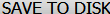
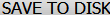
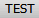
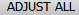
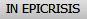
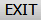
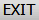

## ## ## beginning of the program when the research is done ## ## and you find yourself in card index ## ## Setup resolution on 1024 x 768 numberOfSubjects = 170 onlyAtBeginningCount = 0 howMuchOfiemsToTake = 15 for i in range(numberOfSubjects): if onlyAtBeginningCount == 0: click(Pattern().targetOffset(17,13))#click on first part else: type(Key.DOWN)#select next subject onlyAtBeginningCount = 1 sleep(4)#when you click on wait(,10) click(Pattern().targetOffset(-94,206)) #click on the image of the part with offset wait(, 10) #the button to appear can take a while, so wait till it appears click() #after you get button test wait(, 20) click() sleep(0.2) click(Pattern().targetOffset(-44,1)) click(Pattern().targetOffset(-122,0)) sleep(0.3) click() #adjust all to get real info sleep(3) #sleep to give more time to load it TODO: this should later be replaced with better code click(Pattern().targetOffset(-3,54)) type(Key.DOWN) sleep(0.9) keyDown(Key.SHIFT)#in the windows to select them all press SHIFT and go with arrow down to select them all if not exists(): for i in range(7):#usually there are 90 items TODO: do only ones till 1.5 type(Key.DOWN) #sleep(0.3) else: for i in range(howMuchOfiemsToTake): #myRegion = Region("1493928207507.png") #if exists(Pattern("1493926779828.png").similar(0.79)): # break #else: type(Key.DOWN) sleep(0.1) #sleep(3) keyUp(Key.SHIFT)# let the shift go, it is already selected sleep(0.3) click() #place them all in epicrisis wait(, 3) click() click() wait(, 3) click()